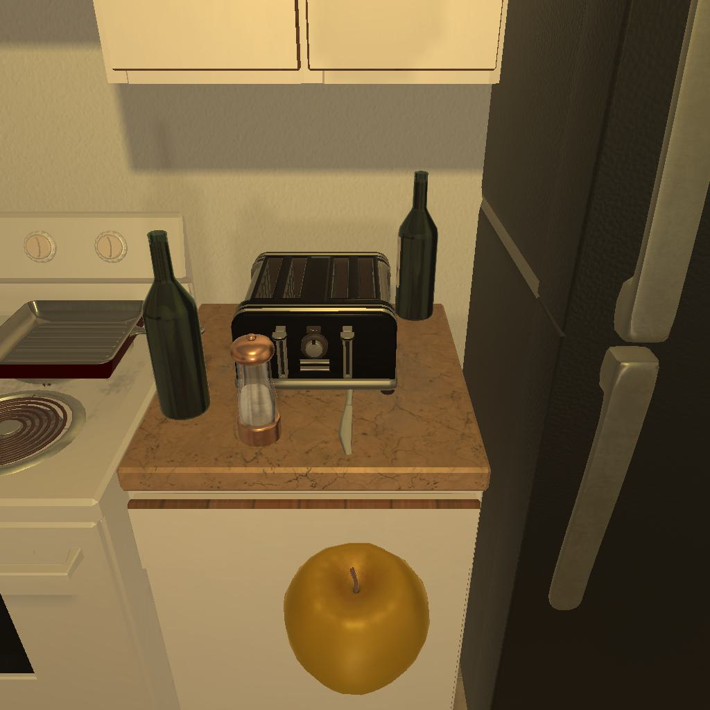

---------------------------------------------------------task: 14---------------------------------------------------------
--------------------------------------------------------------------------------------------------------------------------------------------------------------------
--------------------------------------------------------------------------------------------------------------------------------------------------------------------
Step:--------------------------------------------------------------------------15-------------------------------------------------------------------------------
----------------------------------------
VLM Prompt:
Image1:
Image2:
Image3:
**Instruction**
1. Analyze the provided images to identify all visible household objects and compare the difference between images (e.h. whether the object is opened or not and taken on hand or not), focusing on those relevant to the task description "put a cool apple in countertop."
2. Use the analysis of images and the task hint "The agent must find an object of the desired type, pick it up, go to a fridge, cool the object with the fridge, then find the correct location to place it, and put it down there. The agent does not need to use the fridge button or open the fridge to cool the object, and the agent just needs to do action that is "cool the object with the fridge"." to answer the question: what is the most reasonable action in the choices for the task description "put a cool apple in countertop"?
3. Decide and write the answer using the template: The answer is: (i): , where i is the real number. If there is no desired object in images, search every place based on **Initial Observation** to find the object. And if no one is exactly correct, choose a similar answer.
**Initial Observation**
You are in the middle of a room. Looking quickly around you, you can see microwave (1), countertop (1-2), cabinet (1-11), diningtable (1), drawer (1-3), sink (1), sinkbasin (1), toaster (1), stoveburner (1-4), fridge (1), coffeemachine (1), garbagecan (1)
**Answer Choices**
(1): go to microwave 1
(2): go to cabinet 1
(3): go to diningtable 1
(4): go to drawer 1
(5): go to sink 1
(6): go to cabinet 2
(7): go to cabinet 3
(8): go to sinkbasin 1
(9): go to cabinet 4
(10): go to cabinet 5
(11): go to drawer 2
(12): go to toaster 1
(13): go to cabinet 6
(14): go to stoveburner 1
(15): go to cabinet 7
(16): go to stoveburner 2
(17): go to stoveburner 3
(18): go to stoveburner 4
(19): go to drawer 3
(20): go to cabinet 8
(21): go to cabinet 9
(22): go to cabinet 10
(23): go to coffeemachine 1
(24): go to cabinet 11
(25): go to garbagecan 1
(26): put apple 1 in/on countertop 1
(27): examine apple 1
(28): examine countertop 1
**Answer**
Let's think step by step by following the instructions.
----------------------------------------
----------------------------------------
Original Response:
First, we need to identify all visible household objects in the images.
Image 1: We can see a toaster, two bottles, a salt shaker, a pepper shaker, and a refrigerator. There is also an apple on the countertop.
Image 2: The apple is still on the countertop, and the refrigerator is visible.
Image 3: We see a microwave and the same apple on the countertop.
The task description is "put a cool apple in countertop," so the agent needs to find an apple, cool it with the fridge, and then place it on the countertop. Since the apple is already on the countertop in all images, it is reasonable to assume that the agent has already found the apple.
According to the task hint, the agent does not need to use the fridge button or open the fridge to cool the object. The agent just needs to do an action that is "cool the object with the fridge."
Considering all of the above, the apple is already on the countertop, and we can assume it has been cooled with the fridge as per the task description. The agent's next reasonable action would be to examine the apple to ensure it is cool.
The answer is: (27): examine apple 1.
----------------------------------------
----------------------------------------
>>> Refine Original VLM Response and Get Pure Action: examine apple 1
----------------------------------------
-----------------------------------------------------------------
Running time: 17.639374256134033 seconds
Total Money: 8.204690000000006
-----------------------------------------------------------------
-----------------------------------------------------------------
Text Observation:This is a cool apple 1.
-----------------------------------------------------------------
UNSUCCEED